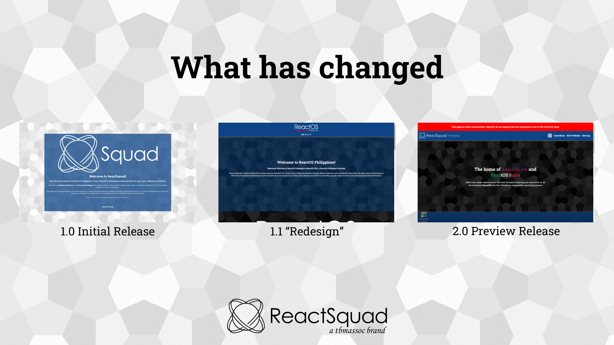
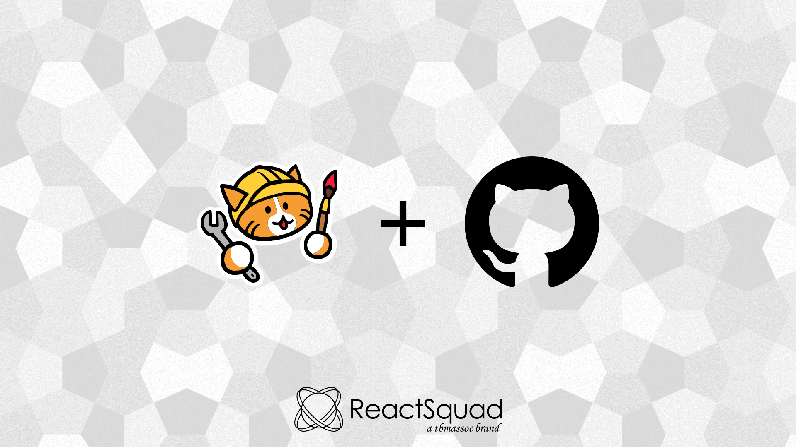

Preview
 thebelovedmoon, Co-founder
thebelovedmoon, Co-founder
It's been a while since we updated our website to make it more appealing to the users, so here's a major update on what we're working on.
While initially planning for the redesign to say goodbye to the 1.0 Initial Release look
(we'll call it 1.1 "Redesign"), I was planning on craving the design to suit the themes,
hence, I chose the dynamic route where I implement both light and dark modes. Pictured here is what
they used to look like in three versions up to the current state.

I somehow forgot to update the site after a long time (even though I said I had to) due to my busy days at VTubing -- well, who would've known that a co-founder of a project aiming to introduce ReactOS is a VTuber -- but behind-the-scenes, I was trying many ways to improve the site. Through various efforts and attempts at improving the design from the other ones (most notably #MamaNyoSquad's Venus Island Diaries), I was finally able to implement them to the site!
This list may be updated and detailed in a future DevLog:
background-clip to distinguish PH and IT text elementsSome of the blog posts are carried over here as part of the design overhaul! Which means that it'll be a 'unified' experience with testings, updates and other shenanigans in context of ReactOS and ReactSquad.
As a part of the redesign plans, I've recently set up a GitHub Organization to take care of its individual repository, as well as when we can provide commits to ReactOS in the future. With this, I've researched a number of ways to integrate it to Neocities for a seamless publish. You can take a look at the YML for details.

I've recently backed up the previous repo before I can publish it straight from GitHub because I want to remove the previous instances and everything before moving forward with the commit.
Below are the future implementations that I might consider before setting it for a full release:
Thanks for reading through this blog! It's been two days since I worked on it, so I'm excited to share more updates as times go by! Of course, more testing with ReactOS as we look forward to the debut of ReactSquad 2.0!